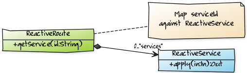

Reactive System Server
The server is where you define the services which will be exposed by your application and that can be consumed using asynchronous message exchange. One of the strengths of Reactive System is that streaming data is at its heart (The server is build using Akka Stream) meaning that both requests and responses can be streamed through the server achieving constant memory usage even for very large requests or responses. Streaming responses will be backpressured against the kafka queue utilised by the server.
Define Service using Routing DSL
A Reactive System Route is in essence a map of services exposed by the server indexed against a service id.

Here is an example how you can create a route:
import org.patricknoir.kafka.reactive.server.dsl._
implicit val system = ActorSystem("SimpleService")
implicit val materializer = ActorMaterializer()
import system.dispatcher
val route: ReactiveRoute = request.aSync[String, String]("echo") {
in => println(s"received: $in"); s"echoing: $in"
} ~ request.aSync("size") { (in: String) =>
in.length
} ~ request.aSync("reverse") { (in: String) =>
in.reverse
}The above code snipped generate a route that declare 3 services:

Reactive Services
In order to create a service using a high level API the request object should be used. A service should be a simple function that given an input of type In should return an output of type Out. If you want this code to be executed asynchronously then the request.aSync(serviceId: String)(f: In => Out) should be used, otherwise we offer asynchronous execution by using request.sync(serviceId: String)(f: In => Out). A last option is if your function is already returning a future having a signature like the following: f: In => Future[Out], in that case you should be using the request.apply(serviceId: String)(f: In => Future[Out]).
Examples
Here is an example how to execute a function asynchronously:
import org.patricknoir.kafka.reactive.server.dsl._
implicit val system = ActorSystem("SimpleService")
implicit val materializer = ActorMaterializer()
import system.dispatcher
var counter: Int = 0
def getCounter(): Int = counter
def incrementCounter(step: Int): Unit = counter += step
val route: ReactiveRoute = request.aSync[Unit, Int]("getCounter") { _ =>
getCounter()
}In this case we will force the incrementCounter function to run synchronously to avoid raise conditions:
import org.patricknoir.kafka.reactive.server.dsl._
implicit val system = ActorSystem("SimpleService")
implicit val materializer = ActorMaterializer()
import system.dispatcher
var counter: Int = 0
def getCounter(): Int = counter
def incrementCounter(step: Int): Unit = counter += step
val route: ReactiveRoute = request.aSync[Unit, Int]("getCounter") { _ =>
getCounter()
} ~ request.sync[Int, Unit]("incrementCounter") { step =>
incrementCounter(step)
}In this last case the getCounter function is already returning a Future[Int] so we will use request.apply:
import org.patricknoir.kafka.reactive.server.dsl._
implicit val system = ActorSystem("SimpleService")
implicit val materializer = ActorMaterializer()
import system.dispatcher
var counter: Int = 0
def getCounter(): Future[Int] = Future(counter)
def incrementCounter(step: Int): Unit = counter += step
val route: ReactiveRoute = request[Unit, Int]("getCounter") { _ =>
getCounter()
}Running the server
Once all the services to expose have been defined in the route: ReactiveRoute is time to create an instance of ReactiveSystem and run it.
The simplest way to create and run a ReactiveSystem is the following:
val source = ReactiveKafkaSource.create("simple", Set("localhost:9092"), "simpleService")
val sink = ReactiveKafkaSink.create(Set("localhost:9092"))
/**
* DSL:
* val reactiveSys: ReactiveSystem = source via route to sink
* val reactiveSys: ReactiveSystem = ReactiveSystem(source, route, sink)
*/
val reactiveSys: ReactiveSystem = source ~> route ~> sink
reactiveSys.run()